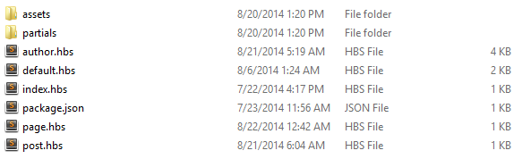
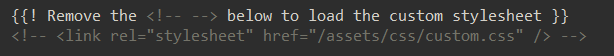
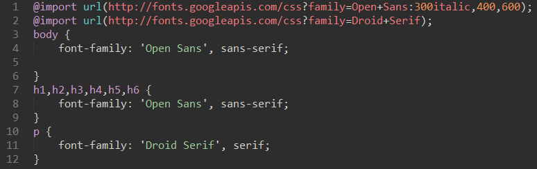
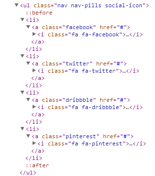
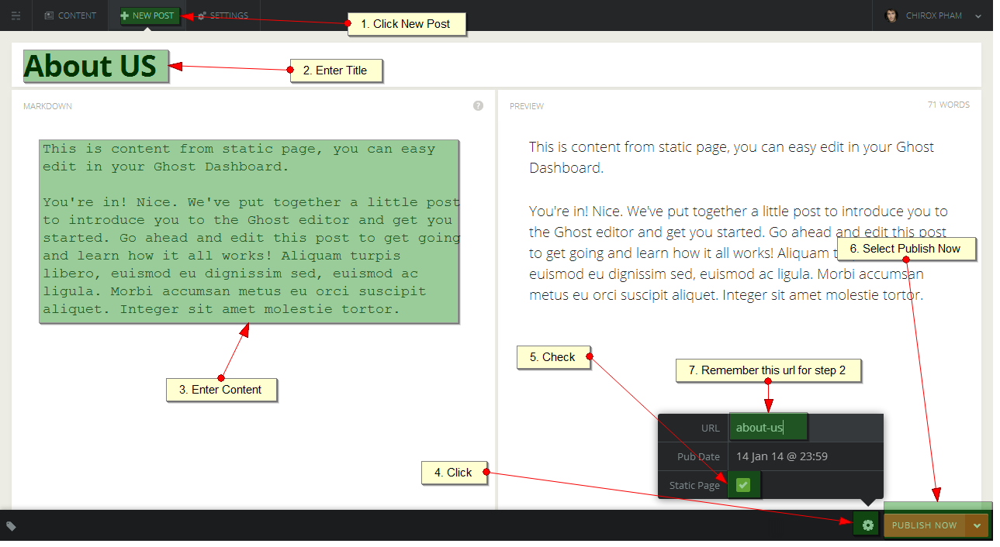

Garden - Ghost
Ghost Theme
- Created: 20/08/2014
- by: Themexpert
- Themexpert.com/
Garden is a modern, trendy and stylish Ghost Theme. We have developed Garden as simple as possible with a highly user experience so that you can create and facelift and your site easily. Garden is suitable for Blogging,autobiography. However the possibilities have no limit.
Getting Started with Garden Theme
Getting started with Garden theme is very easy. Whether you are just a blogger without coding knowledge or even master of HTML, CSS or JavaScript, we've got you covered.
Files Structure
Garden/ ├── assets/ │ ├── css/ │ │ ├── bootstrap.min.css │ │ ├── custom.css │ │ └── font-awesome.min.css │ │ ├── main.css │ │ └── responsive.css │ ├── fonts/ │ │ ├── fontawesome-webfont.eot │ │ ├── fontawesome-webfont.svg │ │ ├── fontawesome-webfont.woff │ │ └── fontawesome-webfont.ttf │ ├── images/ │ │ ├── logo.png │ │ │ │ ├── js/ │ │ ├──jquery-2.1.0.min.js │ │ ├──main.js │ ├── less/ │ │ ├── main.less │ │ ├── responsive.less ├── partials/ │ ├── footer/ │ │ ├── tx-footer.hbs │ ├── home-page/ │ │ ├── tx-mainbody.hbs │ │ ├── tx-showcase.hbs │ ├── post-page/ │ │ ├── tx-mainbody.hbs │ ├── widgets/ │ │ ├── tx-disqus.hbs │ │ ├── tx-post-header.hbs │ ├── static-page/ │ │ ├── tx-mainbody.hbs │ │ ├── tx-showcase.hbs │ ├── pagination.hbs ├── author.hbs ├── default.hbs ├── index.hbs ├── package.json ├── page.hbs ├── post.hbs
Folders Structure

Theme Installation
This documentation is intended to help you properly install and configure Garden for your Ghost blog. Check the following step-by-step instructions on how to perform a manual Garden theme installation.
- Unzip garden.zip and copy the folder into your Ghost theme directory /content/themes .
- At the moment, Ghost won't notice that you've added a new folder to content/themes directory, so you'll need to restart it.
- After restart, login to your Ghost dashboard and navigate to Settings - General.
- Select garder name in the Theme options dropdown.
- Click Save. That's all.
- Visit the frontend of your blog and marvel at the new Garden theme.
DemoBuilder
If you want to replicate the Garden demo site, there are 2 ways to do this, by using GhostData. We provide the data source we use on Garden demo side inside "Demobuilder" directory. Unzip Garden-demobuilder.zip and you will a GhostData.json inside,To import GhostData.json to your new Ghost installation, please follow these steps:
1 - Navigate to http://www.my-blog-site.com/ghost/debug/ . Please replace www.my-blog-site.com with your actual site url. You might need to login with your administrator details.

2 - Press the red Delete button. This will delete all posts and tags from your Ghost database. 3 - Now, browse GhostData.json and press Import button, to load all Ghostion demo data and configurations
Changing the Logo
Upload the new logo via your Ghost dashboard Settings - General - Blog Logo.
CSS Customization
You can skip this step if you are happy with the default color or style of Garden. However, if you would like to do some minor change, you can use the custom stylesheet. The following guide will take you through the steps needed to load the custom stylesheet: 1 - Inside your Garden theme folder, find the following code in /garden/default.hbs .

2 - Remove the block to make your theme load the custom.css file.

stylesheet. 3 - Inside your Garden theme folder, find /Garden/assets/css/custom.css . You can add your custom rules and properties in that
Change Font
We are using the google web font, if you would like to font for the Garden, open file assets/css/main.css, change google web font css url at line 1 and change font-family at line 3,10,12.

Change Social Network icons
In this section you can change Social Network Icons on the bottom or author page ..

How to find social icon? Template using the Font Awesome for social icon, check out this link for more info.
Menu Config

Intergate to Menu
Open File: partials/home-page/tx-showcase.hbs and edit the item,Its for homepage

for the single post page just open partials/widgets/tx-post-header.hbs edit the item;